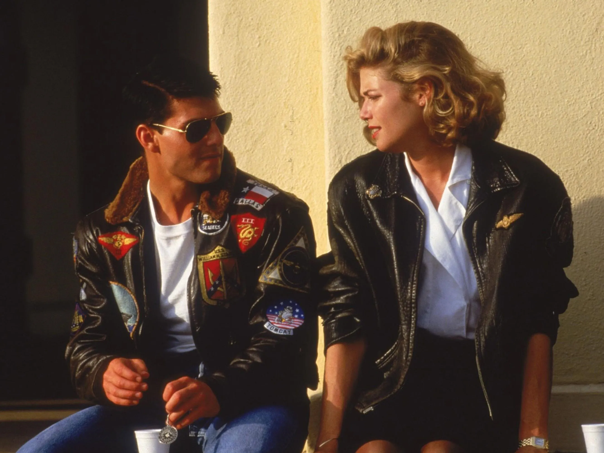
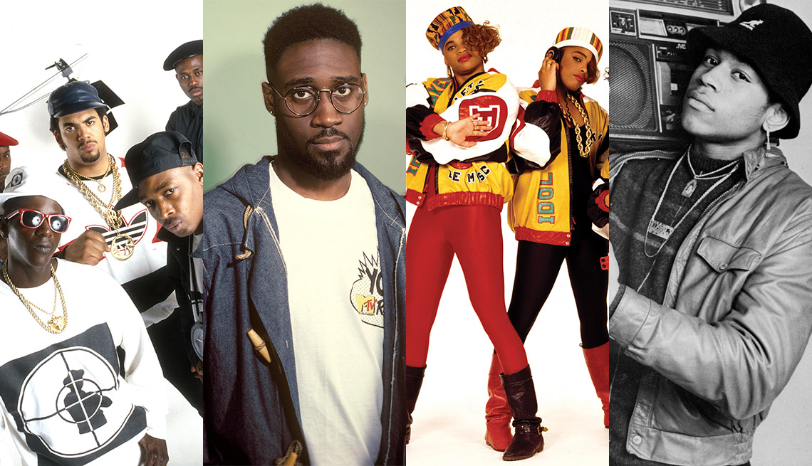
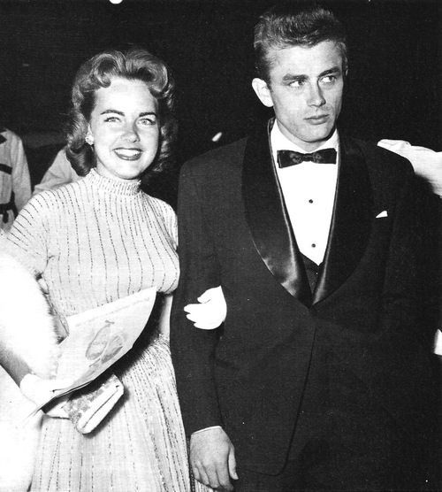

Moda Retro
Vestimenta
La moda retro consiste en un estilo de vestimenta inspirado o característico de décadas pasadas. A diferencia de la moda "vintage", que generalmente implica ropa auténtica de períodos anteriores, la moda retro toma influencia de esos años pero produce y crea piezas modernas con un "toque" del pasado.
Los 60 fue la década del minivestido, las botas altas y los estampados psicodélicos. El estilo mod y el look bohemio también tuvieron su auge en estos años. En los 70 la moda estuvo marcada por los pantalones acampanados, las camisas estampadas, los chalecos de flecos y la influencia del disco. Los 80 trajo consigo la moda de los colores neón, los leggins, las hombreras exageradas y las chaquetas "bomber".
Música

La música retro se refiere a las melodías, ritmos y estilos que emergieron y se popularizaron en décadas pasadas pero que siguen siendo apreciados y redescubiertos en el presente. Es una celebración nostálgica de eras musicales que dejaron huella y que han influenciado a generaciones actuales. La música retro no solo se disfruta en su formato original, sino que también sirve de inspiración para nuevos géneros y artistas que reinterpretan esos sonidos clásicos.
En los 60 se produjo una revolución musical con la llegada de los Beatles, los Rolling Stones y el movimiento psicodélico. El soul, el funk y el pop también tuvieron momentos definitorios. La década de los 70 fue la era de la disco, el glam rock y el punk. Artistas como ABBA, David Bowie y the Sex Pistols dejaron una marca indeleble. En los 80 la música pop dominó las listas de éxitos con artistas como Michael Jackson y Madonna. Fue también la década del nacimiento del hip hop y del rock alternativo.
Bailes
Los bailes de la moda retro son reflejo de las tendencias culturales, sociales y musicales que prevalecían en determinadas décadas pasadas. Estos bailes capturan la esencia y el espíritu de su tiempo, y a menudo se asocian con movimientos culturales o momentos históricos específicos.
Cada época tenía bailes que reflejaban su cultura y valores. Por ejemplo, el auge del jazz en los años 20 llevó a bailes como el Charleston, mientras que la era disco de los años 70 popularizó el Hustle. Los bailes retro a menudo se asociaban con subculturas específicas. Por ejemplo, el rock and roll de los años 50 y 60 dio lugar a bailes como el Twist, mientras que la cultura hip-hop de los años 80 y 90 introdujo el breakdance.
Actores
Durante las décadas del siglo XX, el cine y la televisión vieron surgir a muchas estrellas que, además de su talento actoral, se convirtieron en auténticos íconos de la moda. Estos actores y actrices definieron e influenciaron las tendencias de su tiempo y dejaron una marca imborrable en la historia de la moda y el entretenimiento.
Estas figuras públicas solían estar a la vanguardia de la moda, estableciendo tendencias y estilos que muchos buscaban emular. Desde los elegantes trajes de los actores de los años 50 hasta el boho chic de las actrices de los 70, su impacto en la moda es innegable. Entre los más relevantes estuvieron Audrey Hepburn, Marilyn Monroe, James Dean, Elizabeth Taylor, Grace Kelly y Cary Grant.